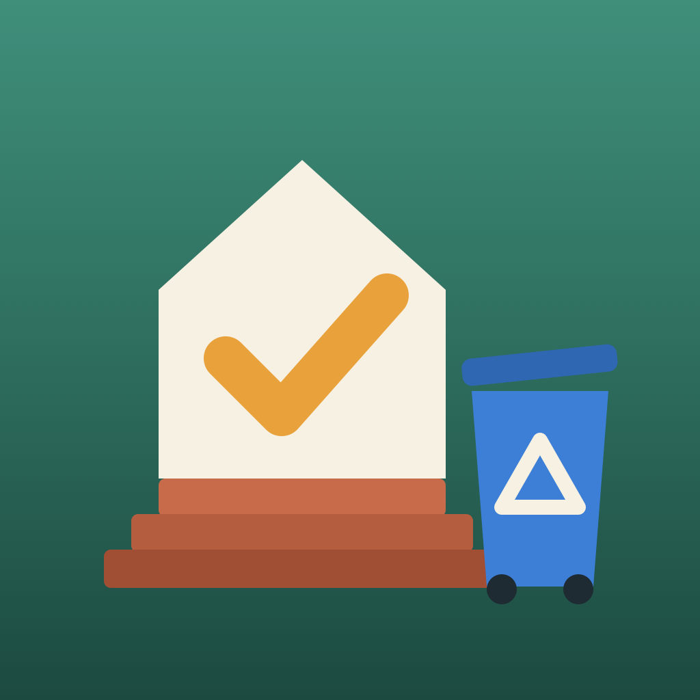

StoopboardPrivacy Policy
No accounts, ads, analytics or tracking, and nothing is sent to us.
This policy explains how Stoopboard (“the app”), a family board for iPhone and iPad with bin-night reminders, chores and stars, and a fridge board of notes and countdowns, developed by Kevin Fitzgerald, handles information.
Information we collect
None. Stoopboard does not collect, store, sell or share personal information on any server, and it does not include analytics, advertising, crash-reporting or tracking tools of any kind.
Information stored on your iPhone or iPad
To work, the app keeps the following on your iPhone or iPad only:
- Your pickup schedules, holiday choices, moved pickups and days off
- Kids’ names and colors, chores, stars, the allowance rate and the payouts you record
- Notes and countdowns
- Your reminder time and whether the bins are out
- A small copy of the board for the widgets, in a container on your device that only Stoopboard and its widgets can read
It stays in Stoopboard’s own storage on your device. If you are signed in to iCloud, it also syncs through your own private iCloud database; if you invite family members, Apple shares that board with the people you choose. Apple stores it in your iCloud account and we cannot see it. Nothing is sent to us. Deleting the app removes the copy on that device; leaving or stopping a shared board removes it from the other people’s devices.
Calendar (optional)
If you tap Show my calendar on the fridge board, iOS asks whether Stoopboard may access your calendars. Stoopboard only reads today’s events to show them on the board and in the widgets, on that device. It never changes your calendars, and events are not synced, shared with family members or sent anywhere. You can remove access in Settings › Privacy & Security › Calendars.
Notifications, widgets and Shortcuts
Bin-night reminders are local notifications created on your device. Widgets and the Shortcuts action are run by iOS on your device. None of them send data to us.
Money
The allowance is a number you keep track of. Stoopboard does not move money, connect to a bank or ask for payment details.
Purchases
Stoopboard is sold through Apple’s App Store. Apple handles payment; we never see your payment details.
Children’s privacy
Because the app collects no personal information from anyone, it does not knowingly collect personal information from children.
Changes to this policy
If this policy changes, the new version will be posted on this page with a new effective date. If the app ever begins collecting data, this policy will be updated before that happens.
Contact
Questions about this policy or the app: help@fitztoppicks.com.